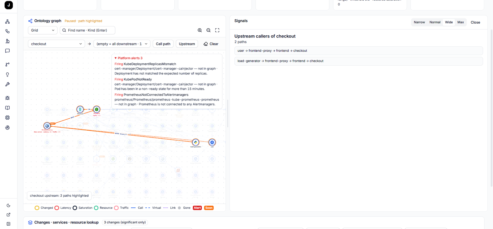
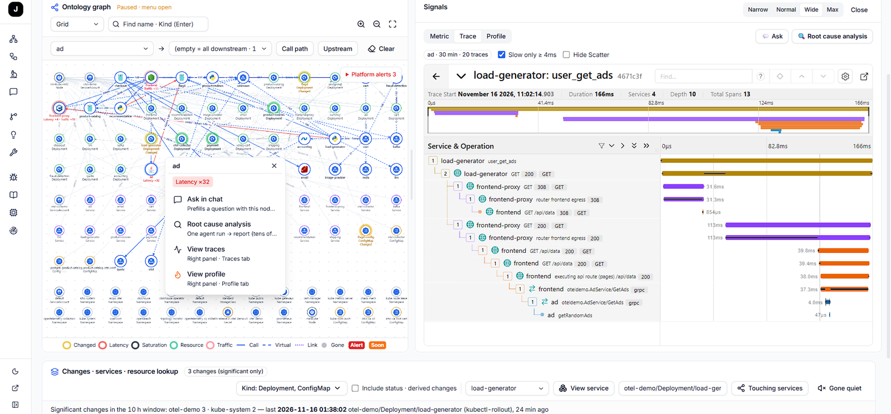
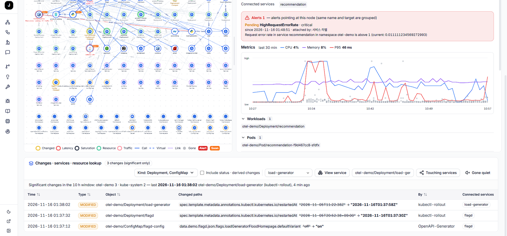
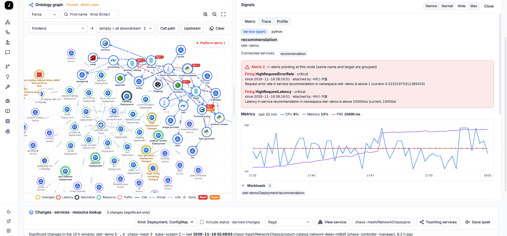
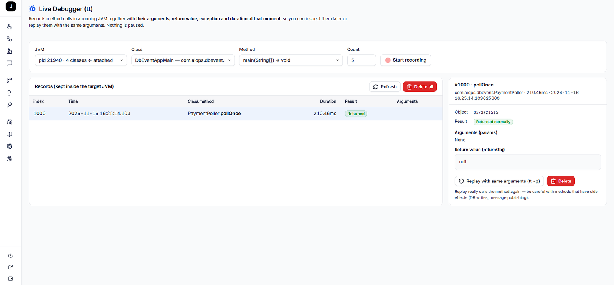
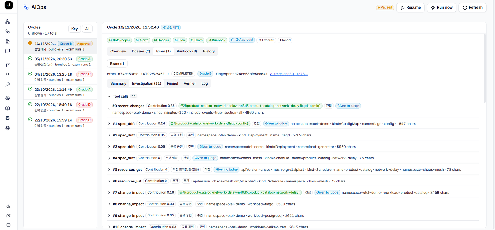
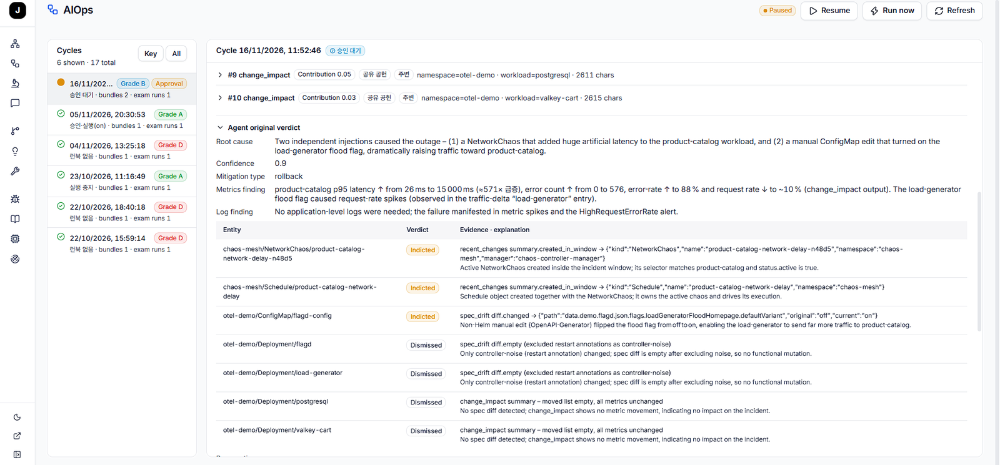

1. One Foundation — Observability
The bigger picture of Autonomous Operations cannot be built without a solid technical foundation. At JuneAI, that foundation is Observability (observation and instrumentation). The metrics, traces, and profiles that a running system emits are gathered in full with our own instrumentation, reaching all the way inside the legacy.
And on this single foundation, two branches rise together.
- Technical ontology — instead of relying on people, AIOps detects, analyzes, and remediates the latency, bottlenecks, and failures of IT systems.
- Business- and industry-specific ontology — on the same observability foundation, we compose ontologies tailored to each business and industry.
The two are not layers stacked one above the other; they are two branches that share the same Observability foundation. Because the foundation is one, whether it is IT operations or business operations, problems are seen and solved in the same way.
The structure of JuneAI
Foundation — Observability (observation and instrumentation)
On top of it → AIOps (autonomous IT operations) · business- and industry-specific ontology (autonomous business operations)
And every decision and action is carried out by agents tuned with the Harness.
Trustworthy AIOps — Technical Ontology Is AIOps
That one branch, AIOps, is built on three qualities. Technical ontology is AIOps itself.
- Reliable — you can trust the results.
- Stable — it does not waver in production environments.
- Root Cause Analysis — it finds the real cause, not the symptom.
Only when these three are in place can IT operations truly be automated. It is not "we don't know the cause, but let's restart anyway"; it is automation that can explain why.
2. Processes and Context Never Break
In complex IT environments, the most common failure is the flow breaking midway. When a trace stops short of the legacy, or data vanishes at a system boundary — you lose the whole picture and miss the cause.
To understand a problem, you must carry the flow forward and pass along the surrounding context. Yet when that flow suddenly breaks in the middle, it is hard to understand what happened and why. Connecting the before-and-after context, reconnecting the broken points, and filling in the missing context — doing exactly this is what instrumentation is.
🔗 JuneAI is strong at instrumentation. It joins broken traces, connects the context before and after, and fills the empty gaps — so the flow never disappears midway.
At JuneAI, processes are not interrupted or broken.
- It understands the internal processing of systems, including the legacy.
- With our own Observability technology, it traces complex IT problems all the way to resolution.
From a single request that starts at the screen (frontend), through the backend, all the way to a deep processing stage inside the legacy, it draws a single unbroken map in one continuous line. That is how it pinpoints exactly "where it slowed down, where it went wrong."





3. The Core Is "Proprietary Instrumentation" — No Restart, No Code Change
The most essential technology holding up JuneAI is our proprietary instrumentation. Without stopping operations, without changing application code, and without a restart — it applies observation and tracing points to any point, at any time. It normally runs light, and the moment a problem is suspected, it instantly trains a "lens" on that very spot.
- ✅ No code change needed — the application code is not modified.
- ✅ No restart needed — there is no need to bring the system back up.
- ✅ No downtime needed — it looks inside the service without stopping it.
- ✅ Anytime, anywhere — even during operation, it adds or removes observation at any point you want.
What Instrumentation Produces — Live Debugging
Because of this proprietary instrumentation, Live Debugging is possible. It means debugging a running application in real time. Normally you would have to stop the system, build a separate test environment, or embed special logging and redeploy — and all of that brings time and risk.
JuneAI is different. Instrumentation and debugging alike require no restart and no code change at all. It identifies and resolves production problems right there, on the spot.
💡 Why it matters — problems that only reproduce in production, or that erupt once in a blue moon, are very hard to catch with traditional methods. Proprietary instrumentation and live debugging capture the cause at the very moment and place the problem actually occurs — without stopping operations for a single instant.


✅ Anytime, anywhere — even during operation, it adds or removes observation at any point you want.
4. High Accuracy Even with Open-Source Models — "Harness Engineering"
Outstanding AIOps stands on two pillars. One is the proprietary Observability and instrumentation seen above — the "eyes" that look unbroken all the way inside the legacy. The other is the agent that turns those gathered signals into accurate decisions and actions, and what holds up this agent is precisely Harness Engineering.
No matter how well you observe, if the AI that receives those signals and judges them wavers, the automation cannot be trusted. Rather than leaning on expensive frontier models, JuneAI tunes its agents with Harness Engineering — delivering high accuracy even on lightweight open-source models.
What Is a Harness?
A Harness is the "operating frame" that wraps an AI model. It refers to the entire engineering of what context is given to the model in what order, what tools it is made to use, and how its output is verified and corrected. With the same model, a superior harness completely changes the accuracy, reliability, and speed of the results.
Not Expensive Frontier Models, but Affordable Open-Source Models
JuneAI builds its agents with affordable open-source models instead of costly frontier models. Even so, it delivers accuracy and reliability that in no way falls behind frontier models. It can run on-premises, which is advantageous for both cost and security. The secret is precisely Harness Engineering.
- 💰 Low cost — it operates AIOps agents without expensive model usage fees.
- ⚡ Fast response — it raises response speed, shortening the time to action.
- 🔒 Stable accuracy — even when the model changes, the harness holds up the quality.
The Fundamental Difference from Competitors
Most competing products depend on frontier models. Their way to improve results amounts to "waiting for a better model to come out," so quality improvement is tied to the pace of model advancement.
JuneAI, from the very first design stage, focused its capabilities on improving the harness rather than depending on the model. The philosophy is that the model is a swappable part, and the real competitive edge lies in the harness that handles that part.
Looking into the harness through tracing
AIOps Observability is directed not only at the system but at the agent itself. JuneAI uses distributed tracing to analyze every step of how the harness operates. It transparently looks into what context the AI received, what judgments it went through, and what action it arrived at — and keeps improving the harness. This is not "black-box AI" but AI that can be observed and verified.




5. In Summary — On One Foundation, with Harness Agents
- The foundation is Observability — observation and instrumentation are the base. On top of it, AIOps and business- and industry-specific ontology rise in the same way.
- Proprietary instrumentation is the core — it applies observation anywhere during operation, with no restart and no code change. Live Debugging is the result that instrumentation produces — instrumentation and debugging alike, without a pause.
- Unbroken processes — it traces in a single line all the way into internal processing, including the legacy, with proprietary Observability.
- Agents completed with Harness Engineering — even with affordable open-source models they deliver frontier-grade accuracy, and they carry out autonomous operations beyond IT, up to the business level.
- Trustworthy AIOps — with reliability, stability, and root cause analysis, it performs explainable automation, not a "restart with an unknown cause."
JuneAI's cornerstone is Observability. Because the foundation is one, the AIOps on top of it and the business- and industry-specific ontology both rise without wavering — and every one of those decisions and actions is completed by agents tuned with the Harness.